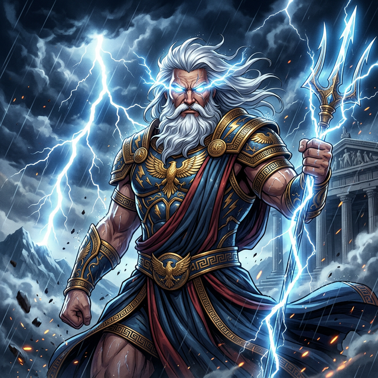

Ksatria Tertinggi di Kuil Pemikir Olympus (SMA N 2 Mengwi)
Salam manusia fana! Saya adalah Penguasa Petir dan pencari kebijaksanaan di Kuil Olympus Cabang SMA Negeri 2 Mengwi. Jiwa saya senantiasa lapar akan ilmu pengetahuan layaknya Dewi Athena, dan selalu mencari pengembaraan epik baru bagai kepulangan Sang Odysseus melintasi lautan lepas. Saya percaya bahwa kebijaksanaan sejati adalah senjata sakti—lebih kuat dari tombak api Ares—untuk mengukir takdir masa depan kehidupan umat.
Di Kuil Suci ini, saya melatih intonasi kecerdikan dalam membaca gulungan kode magis (Informatika) dan menguasai bahasa kaum dari dunia seberang (Bahasa Inggris). Saat senja menyapa balairung, saya beristirahat di singgasana sambil mendengarkan kidung nyanyian sang Apollo (Mendengarkan Musik).
Senjata pamungkas dari petir murni. Mampu menghancurkan rintangan tugas sekolah dan ujian dengan kekuatan tak terbatas.
Tameng pelindung bertahtakan kepala Medusa. Menghalau energi negatif, rasa malas, dan godaan untuk menyerah.
Artefak kuno untuk membaca dan merangkai mantra digital (coding) melintasi ruang dan waktu.
Hewan peliharaan suci sang Dewa Petir. Mata-mata dari langit yang mengawasi segala pergerakan.
Kuda bersayap tunggangan abadi untuk pergi ke dan dari Kuil Pemikir (Sekolah) dengan kelincahan penuh.
Merancang antarmuka (UI/UX) untuk situs web dengan nuansa dewa-dewi mitologi seperti yang Anda saksikan saat ini.
Telah menaklukkan lebih dari 100+ mahakarya musik (mendengarkan musik) sebagai sarana meditasi pikiran.
Ekspedisi menaklukkan berbagai puncak bukit (Hiking) menantang ketahanan fisik dan mental.
Kirimkan persembahan doa atau pesan rahasia melalui portal komunikasi ini:
imadedevadwiwisnawa@gmail.com
082266852727
@dekkkkkkkkkpaaaaaaaaa